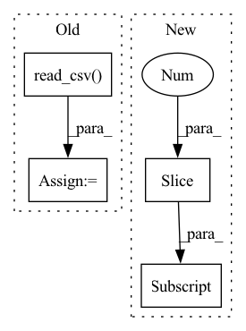

Pattern ID :30234

Before Change
bingliu_neg_bytes, sep="\n", header=None, names=["word"], encoding="latin-1"
)
negative_cleaned = negative.loc[30:].values.flatten().tolist()
positive = pd.read_csv(
bingliu_pos_bytes, sep="\n", header=None, names=["word"], encoding="latin-1"
)
positive_cleaned = positive.loc[29:].values.flatten().tolist()
bingliu_lexicon = {
"positive_words": positive_cleaned,
After Change
resource_package, resource_pos_path
)
negative_words = [
word.decode("latin-1").strip() for word in bingliu_neg_bytes.readlines()
][31:]
positive_words = [
word.decode("latin-1").strip() for word in bingliu_pos_bytes.readlines()
][30:]
In pattern: SUPERPATTERN
Frequency: 3
Non-data size: 4
Instances
Fragment ID: 89695544
Project Name: dccuchile/wefe
Commit Name: ec75b4f3c362732f7a01b582ca2eeb419c99aab8
Time: 2022-08-24
Author: pbadilla.torrealba@gmail.com
File Name: wefe/datasets/datasets.py
M Class Name: AnonimousClass
N Class Name: AnonimousClass
M Method Name: load_bingliu(0)
N Method Name: load_bingliu(0)
M Parent Class:
N Parent Class:
M File Name: wefe/datasets/datasets.py
N File Name: wefe/datasets/datasets.py
M Start Line: 234
M End Line: 255
N Start Line: 234
N End Line: 253
'>
Before Change
bingliu_neg_bytes, sep="\n", header=None, names=["word"], encoding="latin-1"
)
negative_cleaned = negative.loc[30:].values.flatten().tolist()
positive = pd.read_csv(
bingliu_pos_bytes, sep="\n", header=None, names=["word"], encoding="latin-1"
)
positive_cleaned = positive.loc[29:].values.flatten().tolist()
bingliu_lexicon = {
"positive_words": positive_cleaned,
After Change
resource_package, resource_pos_path
)
negative_words = [
word.decode("latin-1").strip() for word in bingliu_neg_bytes.readlines()
][31:]
positive_words = [
word.decode("latin-1").strip() for word in bingliu_pos_bytes.readlines()
][30:]
'>
Fragment ID: 89695545
Project Name: dccuchile/wefe
Commit Name: 6afca8ef990a5173c0d48994a61eae624671d81d
Time: 2022-05-29
Author: pbadilla.torrealba@gmail.com
File Name: wefe/datasets/datasets.py
M Class Name: AnonimousClass
N Class Name: AnonimousClass
M Method Name: load_bingliu(0)
N Method Name: load_bingliu(0)
M Parent Class:
N Parent Class:
M File Name: wefe/datasets/datasets.py
N File Name: wefe/datasets/datasets.py
M Start Line: 234
M End Line: 255
N Start Line: 234
N End Line: 253
'>
Before Change
scheduler = torch.optim.lr_scheduler.CosineAnnealingLR(optimizer, args.num_epoch, 0)
bags_LUAD_path = pd.read_csv("datasets/LUAD.csv")
bags_LUSC_path = pd.read_csv("datasets/LUSC.csv")
cut_LUAD = int(len(bags_LUAD_path)*0.8)
cut_LUSC = int(len(bags_LUSC_path)*0.8)
train_bags_LUAD_path = bags_LUAD_path.iloc[0:cut_LUAD, :]
train_bags_LUSC_path = bags_LUSC_path.iloc[0:cut_LUSC, :]
test_bags_LUAD_path = bags_LUAD_path.iloc[cut_LUAD:, :]
test_bags_LUSC_path = bags_LUSC_path.iloc[cut_LUSC:, :]
for epoch in range(1, args.num_epoch):
train_path = shuffle(train_bags_LUAD_path.append(train_bags_LUSC_path)).reset_index(drop=True)
test_path = shuffle(test_bags_LUAD_path.append(test_bags_LUSC_path)).reset_index(drop=True)
After Change
scheduler = torch.optim.lr_scheduler.CosineAnnealingLR(optimizer, args.num_epoch, 0)
bags_path = pd.read_csv("datasets/tcga-dataset/TCGA.csv")
train_path = bags_path.iloc[0:int(len(bags_path)*0.8), :]
test_path = bags_path.iloc[int(len(bags_path)*0.8):, :]
for epoch in range(1, args.num_epoch):
train_path = shuffle(train_path).reset_index(drop=True)
'>
Fragment ID: 89695541
Project Name: binli123/dsmil-wsi
Commit Name: 85d914d0cca31c59f5e76e7894fadb15e8d2659d
Time: 2020-11-19
Author: bli346@wisc.edu
File Name: .ipynb_checkpoints/train_tcga-checkpoint.py
M Class Name: AnonimousClass
N Class Name: AnonimousClass
M Method Name: main(0)
N Method Name: main(0)
M Parent Class:
N Parent Class:
M File Name: .ipynb_checkpoints/train_tcga-checkpoint.py
N File Name: .ipynb_checkpoints/train_tcga-checkpoint.py
M Start Line: 125
M End Line: 135
N Start Line: 125
N End Line: 131